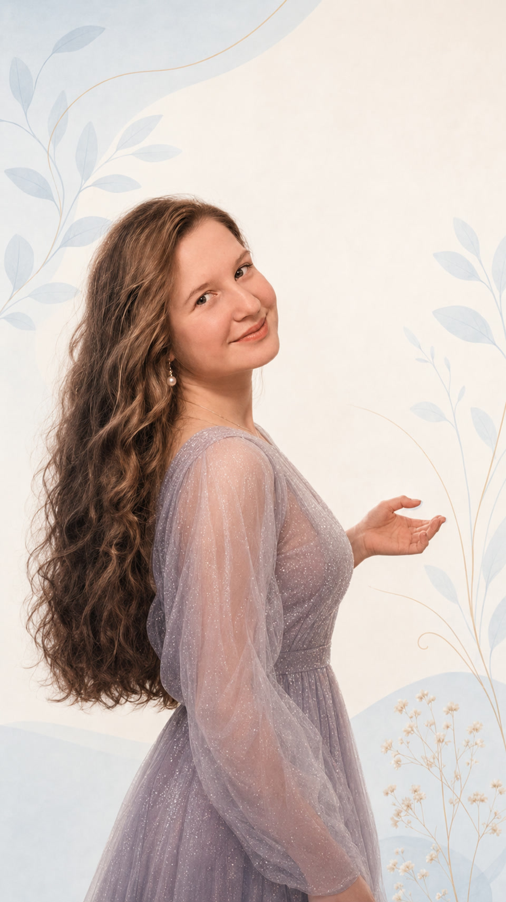
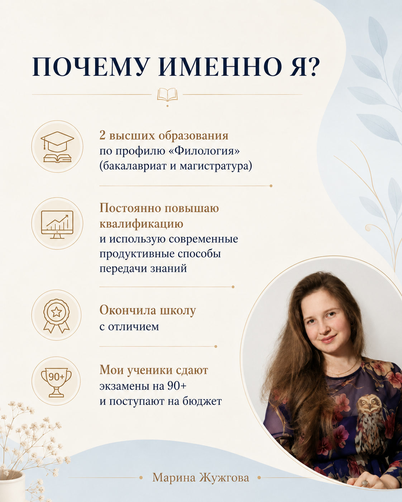
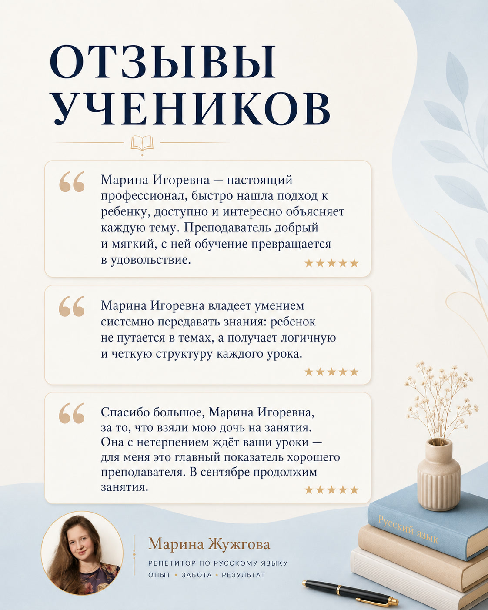

Марина Игоревна Жужгова преподаватель русского языка
Репетитор по русскому языку — онлайн и очно в Добрянке
Онлайн-занятия для школьников 2–11 классов из любого города России и очные занятия в Добрянке: разберём темы, подготовимся к ВПР, ОГЭ и ЕГЭ. Подберём удобный формат — индивидуально, в мини-группе или по видеосвязи.
Онлайн индивидуально — 1500 ₽ за час. Время занятий согласуем с учётом вашего часового пояса.
- 7 лет репетиторской практики
- Филологическое образование ПГНИУ
- Спокойная работа в удобном темпе

Бакалавриат + магистратураФилологический профиль, ПГНИУ
Направления занятий
От текущих тем — к уверенности на экзамене
Школьная программа
Разбор сложных тем, работа над ошибками, диктанты, домашние и контрольные. Подходит, когда нужно вернуть понимание и интерес к предмету.
Подробнее о школьной программе →ВПР и ОГЭ
Повторяем правила, учимся видеть логику заданий, работаем над изложением и сочинением без спешки и перегруза.
Подробнее о подготовке к ОГЭ →ЕГЭ и письменная речь
Системная практика по формату экзамена, сочинениям и типичным ошибкам — с планом работы под цель ученика.
Подробнее о подготовке к ЕГЭ →Форматы
Занятия, которые вписываются в ваш ритм
Индивидуально по видеосвязи
Можно заниматься из любого города: разбирать школьные темы, готовиться к ОГЭ и ЕГЭ и получать обратную связь в личном темпе.
1500 ₽ / час
Подробнее об онлайн-занятиях →Индивидуально в Добрянке
Подходит, если важна личная встреча и работа один на один: находим пробелы и выстраиваем последовательный план.
1000 ₽ / час
Уточнить расписание →Регулярная практика вместе
Группы от 2 до 5 человек для повторения, практики и поддерживающей рабочей атмосферы.
650 ₽ / час
Подробнее о мини-группах →О преподавателе
Знания — не ради заучивания, а для результата ученика
Я окончила бакалавриат и магистратуру ПГНИУ по филологическому профилю. На занятиях объясняю материал последовательно: от понимания правила к уверенной практике.
- помогаю выстроить понятную систему, а не запомнить «на один раз»;
- адаптирую темп и задания под реальные пробелы ученика;
- создаю доброжелательную атмосферу без страха ошибиться.


Отзывы
Когда ребёнок ждёт урок — это уже важный результат
В отзывах родители отмечают спокойный контакт с ребёнком, понятные объяснения и системную структуру занятий.
Обсудим текущую ситуацию, цель и формат — чтобы сразу понять, чем занятия будут полезны именно вашему ребёнку.
Задать вопрос во ВКонтактеОбразование
Филологический профиль: бакалавриат и магистратура
Два высших образования по филологии — основа для глубокого и современного объяснения русского языка.
На занятиях важны и точность, и человеческий подход: ребёнку должно быть понятно, что он делает и зачем.
ПГНИУ · филология
Диплом магистра с отличием
Углублённая подготовка по филологии, 2022 год.
Посмотреть оригиналОригиналы документов доступны для просмотра по ссылкам выше.
Стоимость
Понятные условия до начала занятий
Мини-группа
650 ₽ / час
2–5 учеников, регулярная практика и поддерживающая атмосфера.
Индивидуально очно
1000 ₽ / час
Очные занятия в Добрянке с фокусом на задачи конкретного ученика.
Индивидуально онлайн
1500 ₽ / час
Занятия по видеосвязи из дома в удобном индивидуальном формате.
FAQ
Частые вопросы
Можно ли заниматься онлайн?
Да. Индивидуальные онлайн-занятия проходят по видеосвязи. Можно согласовать подходящее время в личных сообщениях.
Где проходят очные занятия?
Очные занятия проводятся в Добрянке. Детали места и расписания удобно уточнить во ВКонтакте.
Можно ли обратиться с одной сложной темой?
Да. Возможна точечная помощь с темой, контрольной, диктантом, сочинением или экзаменационным блоком.
Есть ли занятия в мини-группе?
Да, мини-группы рассчитаны на 2–5 учеников. Это формат для регулярной практики и повторения.
Первый шаг
Подберём формат под вашу цель и расписание
Кнопка откроет диалог с Мариной. Напишите класс ребёнка, цель занятий и удобное время с указанием города. Например: «Здравствуйте! Нужен русский язык онлайн, 6 класс, сложно с диктантами. Мы из Перми, удобно после 17:00».